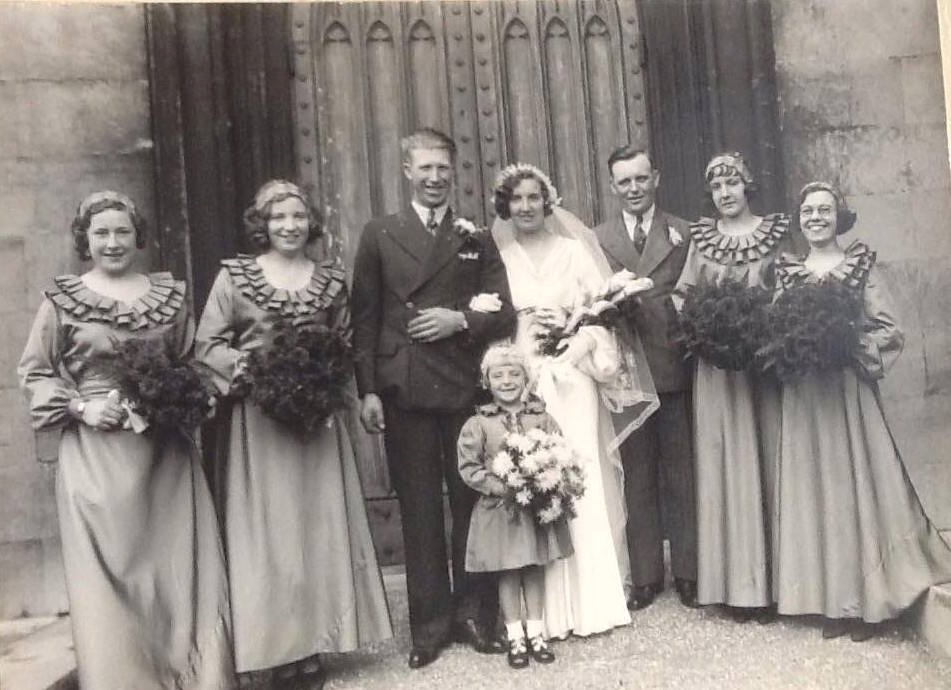
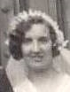
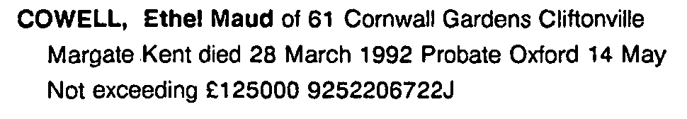
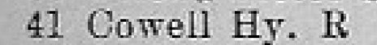
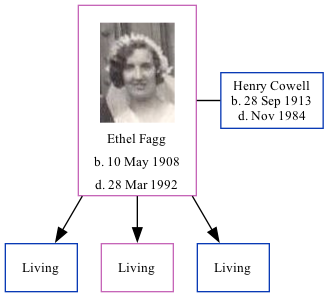

Ethel Maud Cowell (née Fagg) 1908 - 1992
[ Home ] | [ Calendar ] | [ Surnames Index ] | [ Family History ]Ethel Fagg, the wife of Henry Richard Stephen Cowell (the uncle of Nigel Horne), was born in Thanet, Kent, England on May 10, 19081,2,3,4 and. She married Henry (a general laborer with whom she had 3 surviving children Brian H, Mavis E and Alan Stephen) at Holy Trinity Church, Margate, Kent, England on Oct 26, 19356.
Throughout her life, Ethel lived in several places: at 3 Owens Place in Margate on Apr 2, 19117; at 22 Church Square in Margate on Sep 29, 19391; and on 41 Nash Road in Margate in 19658.
She died on Mar 28, 1992 at 61 Cornwall Gardens, Cliftonville, Kent3,5.
Citations
- 1939 Register - Findmypast (was the wife of the head of the household)
- England & Wales births 1837-2006 - Findmypast
- England & Wales deaths 1837-2007 - Findmypast
- Kent Marriages And Banns - Findmypast
- England & Wales Government Probate Death Index 1858-2019 - Findmypast
- England & Wales marriages 1837-2008 - Findmypast
- 1911 Census for England & Wales - Findmypast (was age 2 and the daughter of the head of the household)
- 1965 Kelly's Thanet Directory
Media
Henry Cowell - Ethel Fagg - marriage

Ethel Fagg

Ethel Maud Fagg - probate

1965 Kelly's Thanet Directory

1939 Register Transcription - TNA-R39-1755-1755D-017-27
England & Wales births 1837-2006 - BMD/B/1908/2/AZ/000199/353
England & Wales deaths 1837-2007 - BMD/D/1992/3/78921538
England & Wales marriages 1837-2008 - BMD/M/1935/4/AZ/000398/118
1911 Census for England & Wales - GBC/1911/RG14/04492/0731/5
1939 Register Transcription - TNA-R39-1755-1755D-017-26
England & Wales Government Probate Death Index 1858-2019 - GBOR/GOVPROBATE/C/1992-1992/00047498
Family Tree
Generated by Ged2Site. Last updated on Jul 20, 2025